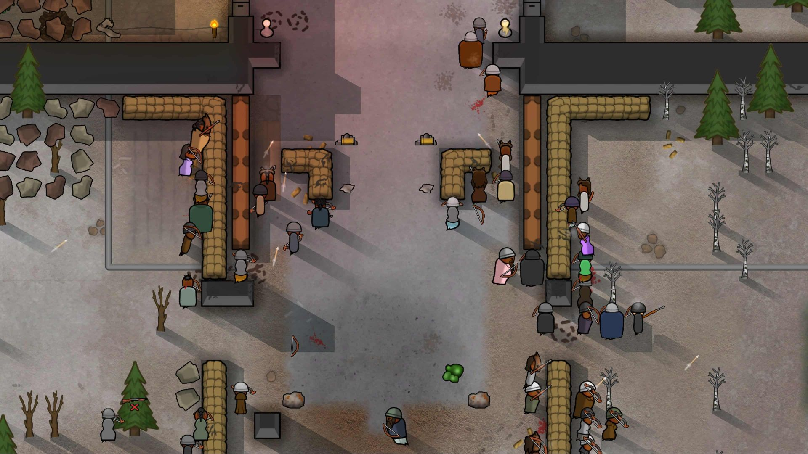

Specialization Project • The Game Assembly
Colony Simulation
A colony simulation project built in TGE (The Game Assemblys custom C++ engine), focused on how NPCs react to needs, schedules, scarcity and a changing world instead of following scripted behaviour.
Systems Programmer
TGE - Custom C++ Engine
Simulation Systems, AI, World Interaction
C++, TGE, ImGui
Why this project
I’ve always liked simulation games where systems create stories on their own. You give characters direction, but they still act independently, which makes the world feel alive.
Going into this project, I wanted to work with AI. My first idea was to make something closer to a Radiant AI system inspired by Oblivion, as I’ve always been fascinated by NPCs that could act independently of the player.
As the project evolved, it shifted more towards a colony simulation. Partly because of scope, but also because I became more interested in building behaviour from simple systems and interactions instead of something more scripted.

I am a big fan of sim games like RimWorld
Project goal
The goal of this project was to make NPCs feel alive by letting them react to the world and their own needs instead of following a script.
Instead of focusing on one mechanic, I wanted to build a small system-driven world where NPCs go through daily routines, respond to scarcity, and change their behaviour based on what is actually happening around them.
I wanted NPCs to feel like they are part of the same world, reacting to the same conditions rather than acting on their own.
I didn’t want to script behaviour directly but to let it come from how the systems interact.
AI Structure – Brain & Actions
I built the AI around a simple Brain + Action structure.
The Brain decides what an NPC should do based on needs, schedule, and the current world state, while Actions handle the actual behaviour.
Each frame, the NPC either continues its current action or switches to a new one if the action has finished or should be interrupted.
The update loop itself is very simple which made it easy to follow what was happening early on.
Some actions, like eating, sleeping, building or carrying resources, are not allowed to be interrupted once they have started.
Without it, actions could cancel themselves immediately when new decisions were made which, led to very weird behaviour.
Some actions also use small state machines internally.
For example, a build action can move through states like going to a warehouse, going to the build site and then building.
The build action uses a internal state machine.
View Brain::Update pseudocode
if there is no current action
or the current action is finished
or the current action should be interrupted
{
decide next action
create that action
if a new action exists
{
start the action
}
}
if there is a current action
{
update the action
}At the core of the AI is a very simple update loop.
Simulation & NPC Behaviour
A typical NPC moves through a simple daily loop. They work, get hungry, eat, get tired, relax, and eventually go to sleep.
This is not a fixed sequence. It comes from their needs and from what is currently happening in the world.
The behaviour is also driven by a priority order. Hunger is checked first, then tiredness, then shared world tasks like building.
If none of those take priority, the NPC falls back to its current schedule.
Carriers also have special rules, since urgent food transport can override their normal work behaviour.
This means NPCs are not just following routines. They constantly react to changing conditions, which makes the simulation feel less scripted.
Carriers carrying
Fishers fishing
Hunters hunting
Woodcutters woodcutting
From Static to Living Systems
One of the biggest challenges in this project was making the simulation actually feel alive.
Early on, everything technically worked but it didn’t feel alive. NPCs repeated the same patterns over and over again, there were no real consequences to their decisions, and too little changed in the world.
The biggest improvement came from introducing finite resources.
Once resources could run out, NPCs were forced to react to each other and to the world in a different way. Behaviour became less predictable because NPCs could no longer rely on things always being available. That made their decisions feel more believable.
I also introduced food decay, mostly because I thought it would be fun to implement but also because it added another layer of scarcity. Food is no longer just available or unavailable as it changes over time. If left too long it rots and finally dissapears. This created more variation in the simulation and gave the resource and transport systems more to react to.
These changes made the world feel less perfect and a lot more believable.
Notice how carriers prioritize food based on freshness instead of just going for the nearest one.
Reservation & Shared Resources
Something felt off when multiple NPCs chose the same restaurant.
They would all go there at the same time, eat until the food ran out, and then leave at the exact same moment.
It looked unnatural and scripted.
That was the reason I introduced a reservation system.
Reservation means that an NPC claims a resource ahead of time, so others NPCs can’t use it at the same time.
Instead of only checking if food existed, NPCs would have to reserve food before committing to an eating action.
I had already built a similar system for world resources, where NPCs reserve things like wood or food in the world.
That worked well, but it turned out to be much more complicated when applied to restaurants.
The restaurant looks like it has enough food, so multiple NPCs choose the same place.
After adding reservation, NPCs spread out based on what is actually available.
When Reservation Broke the System
Reservation sounded like a good idea at first, but it caused a lot of problems, mainly because I hadn’t planned for it from the beginning.
The main issue was that different systems were using different definitions of what "available food" actually meant.
The AI could still choose a restaurant based on total food, while the eating logic required food that was not already reserved.
This meant NPCs could commit to eating, walk to a restaurant, and then fail when they arrived because the food was already taken.
Fixing this meant updating multiple systems to follow the same rules for reservation and availability.
The restaurant still has food, but none of it is actually available.
Task Ownership
The same idea is used for build sites, where only a limited number of NPCs can work at the same time.
This was done mostly to make it look better instead of having every NPC in the world crowd around the same build site.
Only a limited number of NPCs can work on the same build site at once.
Conclusion
One thing this project made very clear is how connected everything is in a colony sim.
Reservation is a good example of that. It looked simple at first, but ended up affecting more parts of the game than I expected.
It also showed how sensitive these kinds of systems are. Small changes could completely change how NPCs behaved which made it important to be able to observe and debug what was actually happening.
Another big takeaway was planning. Reservation wasn’t something I thought about early on which made it much harder to add later once other systems were already built around it.
Overall, this project showed me how quickly things can get complicated when systems start interacting.
What I’d Improve Next
If I had more time there are a few things I would have liked to expand or improve.
Some systems were never fully finished. Wood for example currently doesn’t have a real use. The idea was to use it for building and maintenance but I didn’t have time to get that working properly.
I’m also using a clock and a schedule system but right now they are only visible through ImGui. I would like to bring that into the actual game so the player can see time and NPC routines directly.
The world itself could also be improved a lot. I would like to make better use of tiles, add more variation and possibly explore procedural generation for maps.
The world currently doesn’t use unwalkable tiles which made pathfinding unnecessary. If I were to expand the project I would introduce blocked areas and build pathfinding around that.